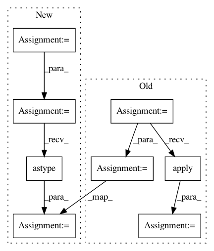

1fe319ef49168c2c7c8d10a7c426c1414521d164,cnvlib/tabio/genepred.py,,read_refflat,#Any#Any#Any#,80
Before Change
// dframe.apply,applymap,...
raise NotImplementedError
else:
dframe = dframe.sort_values(["chromosome", "start", "end"])
dframe["start"] -= 1
// NB: same gene name can appear on alt. contigs
dframe = (dframe.groupby(by=["chromosome", "strand", "gene"],
as_index=False, group_keys=False, sort=False)
.apply(_merge_overlapping))
return dframe
def _merge_overlapping(dframe):
After Change
cols_rest = ["_start_tx", "_end_tx", // Transcription
"_start_cds", "_end_cds", // Coding region
"_exon_count", "exon_starts", "exon_ends"]
converters = {"exon_starts": _split_commas, "exon_ends": _split_commas}
elif cds:
// Use CDS instead of transcription region
cols_rest = ["_start_tx", "_end_tx",
"start", "end",
"_exon_count", "_exon_starts", "_exon_ends"]
else:
cols_rest = ["start", "end",
"_start_cds", "_end_cds",
"_exon_count", "_exon_starts", "_exon_ends"]
colnames = cols_shared + cols_rest
usecols = [c for c in colnames if not c.startswith("_")]
// Parse the file contents
dframe = pd.read_table(infile, header=None, na_filter=False,
names=colnames, usecols=usecols,
dtype={c: str for c in cols_shared},
converters=converters)
// Calculate values for output columns
if exons:
dframe = pd.DataFrame.from_records(_split_exons(dframe),
columns=cols_shared + ["start", "end"])
dframe["start"] = dframe["start"].astype("int")
dframe["end"] = dframe["end"].astype("int")
return (dframe.assign(start=dframe.start - 1)
.sort_values(["chromosome", "start", "end"])
In pattern: SUPERPATTERN
Frequency: 3
Non-data size: 8
Instances
Project Name: etal/cnvkit
Commit Name: 1fe319ef49168c2c7c8d10a7c426c1414521d164
Time: 2016-10-28
Author: eric.talevich@gmail.com
File Name: cnvlib/tabio/genepred.py
Class Name:
Method Name: read_refflat
Project Name: NTMC-Community/MatchZoo
Commit Name: 53a93d8af5d041f6c5dfdef2fb763f8419e3023d
Time: 2019-01-19
Author: i@uduse.com
File Name: matchzoo/datasets/snli/load_data.py
Class Name:
Method Name: load_data
Project Name: bashtage/linearmodels
Commit Name: 8698f9b95638a258c880e0ae25cdf8859f26bfa3
Time: 2017-04-05
Author: kevin.k.sheppard@gmail.com
File Name: linearmodels/panel/model.py
Class Name: BetweenOLS
Method Name: _choose_cov